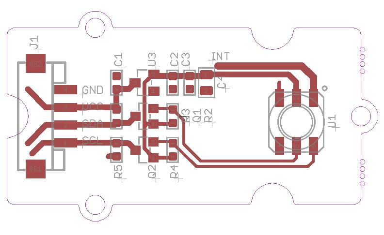
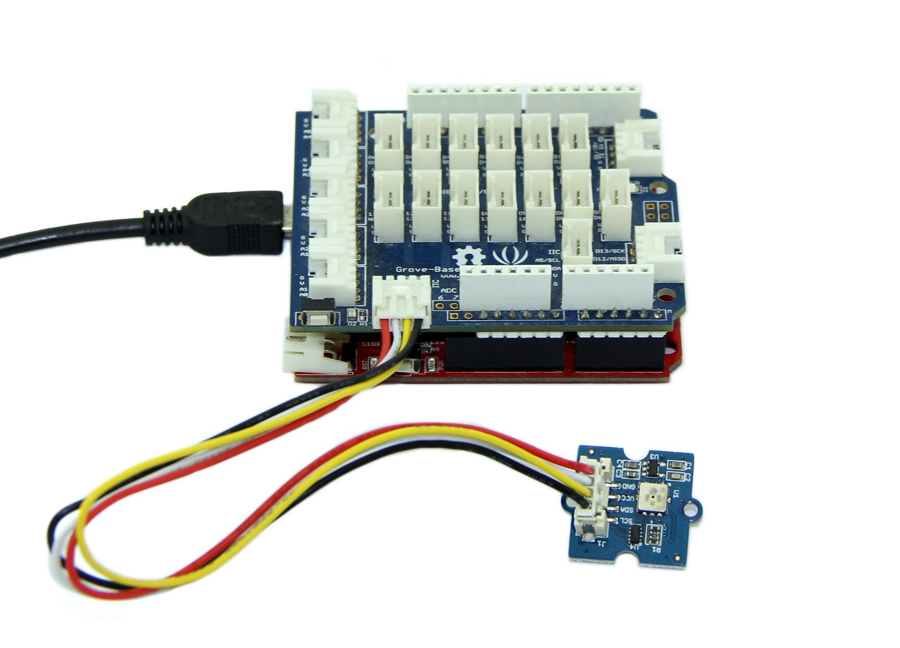
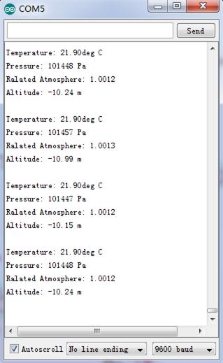
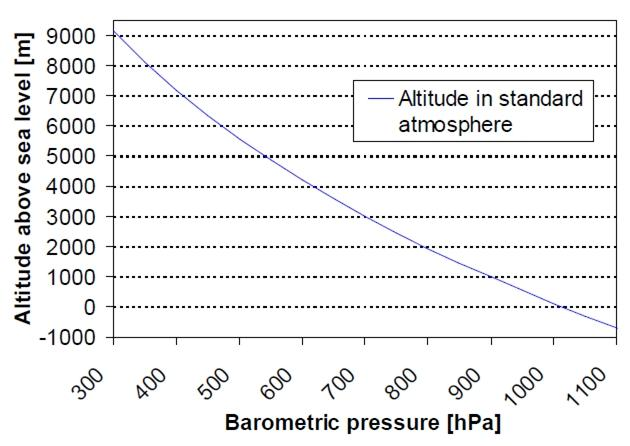

This Grove - Barometer (High-Accuracy) Sensor features a HP206C high-accuracy chip to detect barometric pressure ,Altimeter and temperature. It can widely measure pressure ranging from 300mbar~1200mbar, with a super high accuracy of 0.01mbar(0.1m) in ultra-high resolution mode.The chip only accepts 1.8V to 3.6V input voltage. However, with outer circuit added, this module becomes compatible with 3.3V and 5V. Therefore, it can be used on Arduino/Seeeduino or Seeeduino Stalker without modification.It is designed to be connected directly to a micro-controller via the I2C bus.
Model:SEN05291P

| Item | Min | Typical | Max | Unit |
|---|---|---|---|---|
| Voltage | 3.3 | 5 | 5.5 | VDC |
| Current | 635 | / | 1100 | uA |
| Pressure Range | 300 | / | 1200 | hPa |
| Faster I2C data transfer | / | / | 10 | MHZ |
| Dimension | 20.4*41.8*9.7 | mm | ||
| Weight | / | g | ||
Barometric condition is one of the criteria used to predict coming change in weather and deduce altitude above sea level. Here is a demo to show you how to read the barometric data from this Grove - Barometer Sensor.
1. Connect it to IIC port of Seeeduino or Grove - Base Shield via a Grove cable. And connect Arduino to PC via a USB cable.

2. Download the library Grove_Barometer_HP20x;Unzip it into the libraries file of Arduino IDE by the path: ..\arduino-1.0.1\libraries.
3. Create a new Arduino sketch and paste the codes below to it or open the code directly by the path:File -> Example ->Barometer_Sensor->Barometer_Sensor.
/*
* Demo name : HP20x_dev demo
* Usage : I2C PRECISION BAROMETER AND ALTIMETER [HP206C hopeRF]
* Author : Oliver Wang from Seeed Studio
* Version : V0.1
* Change log : Add kalman filter 2014/04/04
*/
#include <HP20x_dev.h>
#include "Arduino.h"
#include "Wire.h"
#include <KalmanFilter.h>
unsigned char ret = 0;
/* Instance */
KalmanFilter t_filter; //temperature filter
KalmanFilter p_filter; //pressure filter
KalmanFilter a_filter; //altitude filter
void setup()
{
Serial.begin(9600); // start serial for output
Serial.println("****HP20x_dev demo by seeed studio****\n");
Serial.println("Calculation formula: H = [8.5(101325-P)]/100 \n");
/* Power up,delay 150ms,until voltage is stable */
delay(150);
/* Reset HP20x_dev */
HP20x.begin();
delay(100);
/* Determine HP20x_dev is available or not */
ret = HP20x.isAvailable();
if(OK_HP20X_DEV == ret)
{
Serial.println("HP20x_dev is available.\n");
}
else
{
Serial.println("HP20x_dev isn't available.\n");
}
}
void loop()
{
char display[40];
if(OK_HP20X_DEV == ret)
{
Serial.println("------------------\n");
long Temper = HP20x.ReadTemperature();
Serial.println("Temper:");
float t = Temper/100.0;
Serial.print(t);
Serial.println("C.\n");
Serial.println("Filter:");
Serial.print(t_filter.Filter(t));
Serial.println("C.\n");
long Pressure = HP20x.ReadPressure();
Serial.println("Pressure:");
t = Pressure/100.0;
Serial.print(t);
Serial.println("hPa.\n");
Serial.println("Filter:");
Serial.print(p_filter.Filter(t));
Serial.println("hPa\n");
long Altitude = HP20x.ReadAltitude();
Serial.println("Altitude:");
t = Altitude/100.0;
Serial.print(t);
Serial.println("m.\n");
Serial.println("Filter:");
Serial.print(a_filter.Filter(t));
Serial.println("m.\n");
Serial.println("------------------\n");
delay(1000);
}
}
4. Open the serial monitor to receive the sensor's data including temperature, barometric pressure value, relative atmosphere pressure and altitude.

The following is a reference graph plotting out the relationship between altitude above sea level and barometric pressure.
